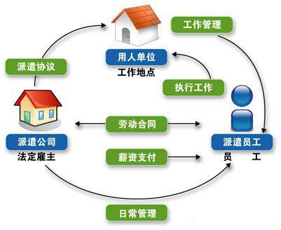
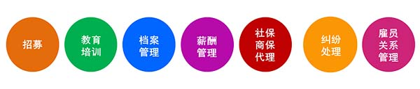

人事外包
人事外包是企业根据自身需要将人力资源六大模块的某一模块或多个模块的工作职能或管理工作外包给专业的人力资源公司操作，以降低企业人力资源管理成本，实现人力资源效率最大化，充分实现企业内部人力资源工作的战略性与规划性。人事外包服务内容从薪资发放、社保代理等事务性工作逐渐发展到人力资源战略规划、制度设计与创新、流程整合、员工培训与发展、薪酬调查及方案设计等战略性人力资源工作。易优泽人事外包将根据企业不同的发展阶段和需求，为企业量身定制“综合性解决方案”，提供全方位或个性化服务，成为企业人力资源部门的好帮手及专业顾问

